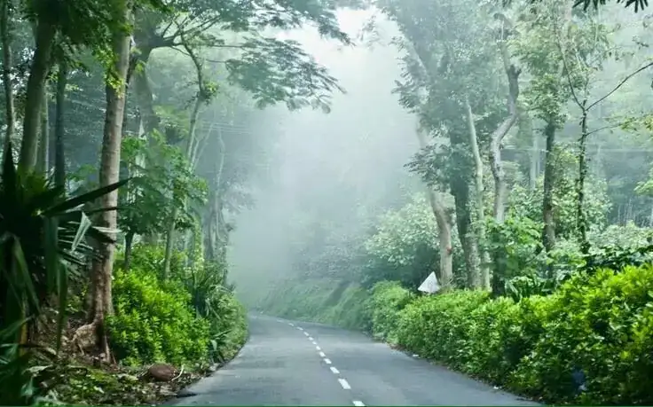

Growing since 1867
Coffee, from the estate itself.
Grown, processed and roasted at 4,600 ft in the Shevaroy Hills. Then sent straight to you.

Nurtured by generations of wisdom
Most coffee brands tell you where the coffee came from.
We can show you. Cauvery Peak is a working plantation farmed by the same family for five generations. Bauxite-rich soil, two tiers of shade trees, and mist that sits on the hills most mornings. That is what the cup tastes of.
Every stage happens here. Nothing leaves the estate until it is roasted and packed against your order.
Grower to Connoisseur
From seed to cup, without leaving the estate.
Every stage below happens on this plantation. That is what single estate actually means.
-
 01
01
Planting
Seed taken from selected mother plants, raised in the estate nursery. Three years pass before a first crop.
-
 02
02
Harvesting
Only fully ripe red cherry, hand-picked across several selective rounds through the season.
-
 03
03
Pulping
Sorted and pulped the same day it comes off the tree — nothing waits overnight in cherry.
-
 04
04
Washing
Fermented overnight in tanks, then the mucilage is washed clean.
-
 05
05
Drying
Sun-dried on concrete terraces, turned by hand, down to under 12% moisture.
-
 06
06
Milling & grading
Remaining skins removed, then graded and sorted for defects by hand.
-
07
Photograph to come
We haven't put someone else's roastery here.
Roasting
Roasted after your order is placed. Never before, never to sit in a warehouse.
-
 08
08
Packed & shipped
Rested 24 hours to cool, packed, and sent from the estate itself.
The coffee
Taste the difference of place.
Three estates, three elevations, three cups — and two blends made from them.
Visit
Come and see where your coffee begins.
You can buy Arabica from hundreds of brands. You cannot walk their plantation, watch the mill run, and drink the coffee where it grew.

The Coffee Experience Tour
Wet mill, dry mill, roasting room, the estate museum — ending with a cup at the café.
Cauvery Peak Estate Café
On the plantation, 15 km from Yercaud town. Coffee, retail and the tour.
Lake View Village Café
On Yercaud Main Road. Coffee, food and parking.
Glenfell Kiosk
17th hairpin bend, Salem–Yercaud ghat road. Valley views.
Heritage
150 years. Five generations. One estate.
The estate was first assigned in 1867. The family bought Glenfell in 1937 and Cauvery Peak in 1957. In 1965 MSP Rajes travelled to Costa Rica and brought back the Hawaiian Red Caturra seed the estate still grows today.
The ecosystem
Coffee that grows with the forest.
Not a sustainability claim. This is how the estate physically works.

Shade
Two tiers of native and exotic trees regulate sun, rain and temperature.

Water
Rainwater channelled through stone-lined drains and harvested across the estate.

Soil
Vermicompost made on site supplies 40% of the estate's fertiliser.

Biodiversity
Rare birds, mammals, fish and reptiles share the shade and the water bodies.

In print
Named as a source of the best coffee since 1922.
Kenneth Davids, who founded Coffee Review, wrote about this estate in 1996. These hills have been on record for a century.
Kenneth Davids on the estate
Grower to Connoisseur
Coffee tourism in the Shevaroys
Yercaud, Tamil Nadu
One drive up the hill and the whole thing makes sense.
Walk the plantation, watch the mill, taste the coffee where it grew.